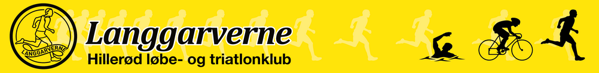

Langgarverne, Hillerøds løbe- og triatlonklubs historik går tilbage til 1976 og tæller i dag cirka 150 entusiaster. Klubben repræsenterer stor mangfoldighed såvel i medlemsskaren som i valg af motions -og træningstilgang. Her er der plads til alle, der har lyst til socialt samvær og den gode motionsoplevelse, cykling, svømning, løb i alle afskygninger; kort, langt, ultra, langsomt, hurtigt, trail, off-trail, baneløb, styrketræning, foredrag, begynder, øvede, erfarne m.fl. Du finder os alle hos Langgarverne.
Langgarverne afholder årligt Hillerød Triatlon med 1.000 deltagere samt Julestjerneløbet. Vores løb fokuserer altid på den gode sportslige oplevelse. Det skal være et arrangement, som vi selv gerne vil være deltagere i og efterfølgende føle at ”det var godt!".
Besøg vores hjemmeside for mere information
Løbsarrangørerne
ParforceTrail arrangeres af entusiatiste motionsudøvere, som dels dyrker triatlon og dels forskellige former for løb, herunder selvfølgelig trailløb. Vi laver det løb, vi gerne selv ville løbe med mere fokus på løbeoplevelsen end den kommercielle del.